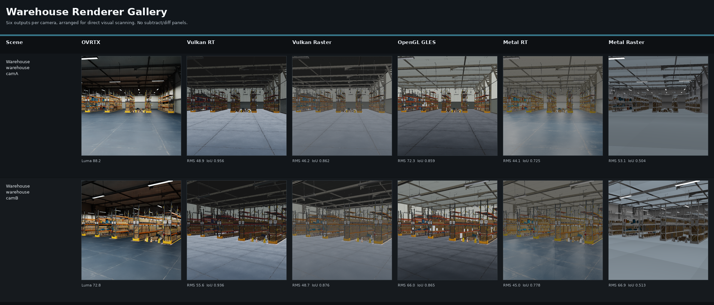

Project
nanousd-labs
Specs are durable. Agents are elastic — an experimental fleet for generating USD implementations and renderer stacks from the USD Core Specification.

nanousd-labs is an experimental fleet published under Omniverse Labs. It explores how far agents can take generating spec-faithful USD implementations and stacks from the USD Core Specification. The spec is the durable reference; implementations are elastic outputs you can regenerate against your own constraints. Your existing OpenUSD stack keeps working untouched — use what fits, file what doesn't.
Experimental. Pre-1.0, no stability or support guarantees. Each component's README carries its current status and gaps.
The fleet stack
Each component is its own repo directory. The fleet is a stack — take as little or as much height as you need:
nanousdview · interactive viewer
vulkan / opengl / metal · renderer backends (headless)
nanousd-python · Python bindings
nanousd · core C ABI — the foundation
┄┄┄┄┄┄┄┄┄┄┄┄┄┄┄┄┄┄┄┄┄┄┄┄┄┄ not wired yet
usd-developer-skillgraph · the generatorWhat's included
-
usd-developer-skillgraph— skills, prompts, contracts, and goldens pinned to the USD Core Spec; the method that drives generation -
nanousd— flagship portable C-ABI implementation of the Core Spec (layering, composition, read/write) -
nanousd-python— Python bindings and apxr_compatshim over the C ABI -
Renderer backends — headless Vulkan, OpenGL, and Metal renderers that load USD through
nanousd -
nanousdview— backend-agnostic interactive viewer and stage inspection over the C ABI
Where we are
The flagship nanousd library and the renderer stack were built directly with agents and are the most complete part of the fleet today.
Driving those implementations from the skill graph — regenerating them from the spec — is the experiment, and it's earlier along.
Single-layer USDA/USDC read is generated and working; broader composition, variants, and full-library regeneration from skills are still in progress.
See
STATE-OF-THE-FLEET.md
for the honest current-state picture.
Renderer comparisons
The fleet ships visual and performance comparisons across OVRTX reference output and the nanousd renderer backends
(Vulkan RT/raster, OpenGL GLES, Metal RT/raster) on chess, Apple asset, and Isaac Sim warehouse scenes.
Gallery images and metrics live under
projects/nanousd-labs/comparisons/.
Prerequisites
- Linux or macOS (Metal backend is Apple-only; Vulkan and OpenGL vary by platform)
- C/C++ toolchain, CMake, and Python 3.10+
- GPU suitable for the renderer backend you want to build
- Vulkan SDK (Vulkan backend) or Xcode (Metal backend) as documented per component
How to explore
Start from the fleet README, then follow each component's own build instructions:
cd projects/nanousd-labs
# Read README.md and STATE-OF-THE-FLEET.md
# Build nanousd first, then bindings/renderers as needed
For the skill graph and generation workflow, start at
usd-developer-skillgraph/ and its tutorial under
usd-developer-skillgraph/docs/tutorial/.
Repository path
Clone and explore:
projects/nanousd-labs/
Fleet README:
projects/nanousd-labs/README.md
These components are published as one experiment and are not set up to take inbound pull requests against these directories. Feedback on the way of working — skills, contracts, spec-ambiguity reports — is welcome via GitHub issues.